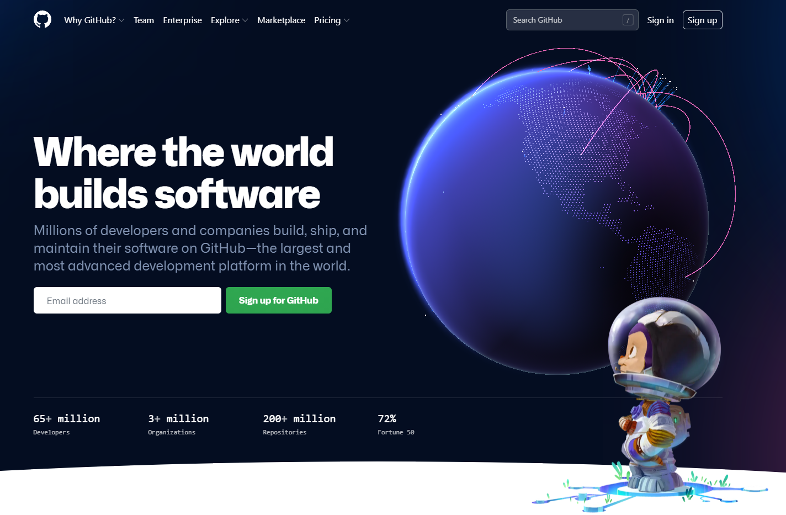

Откройте ваш любимый браузер и в адресной строке введите – github.com.
Посмотрите на открывшуюся страницу. На секунду задумайтесь – «Твою мать! Как же здесь красиво!»:
Почему задуматься нужно только на секунду? Да потому что уже прямо сейчас вы можете стать частью всего этого!
Поэтому, смотрим на глобус всего секунду и срочно – к следующему шагу!